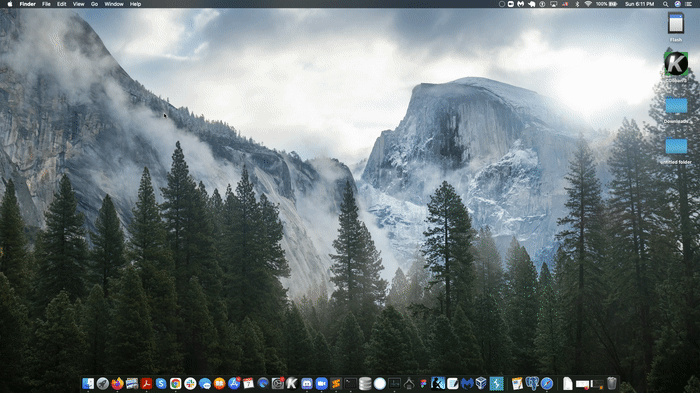
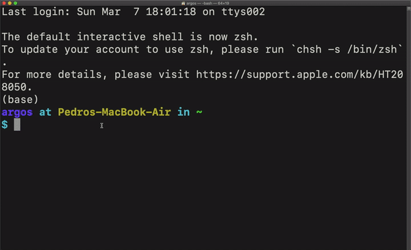

Instruction for getting a list of the files in your downloads
In your finder, go up to the Go menu and open Utilities (or press shift-command-u).
Open the Terminal application.

In the terminal, type "cd downloads" (this will take you to the downloads directory)
Type "touch panda.txt" (this will create a file to save your list to)
Type "ls > panda.txt" (note "l" as in lower-case "L"), this will fill your panda.txt file with the list

You can now close the terminal, go to your downloads folder, and find the panda.txt.